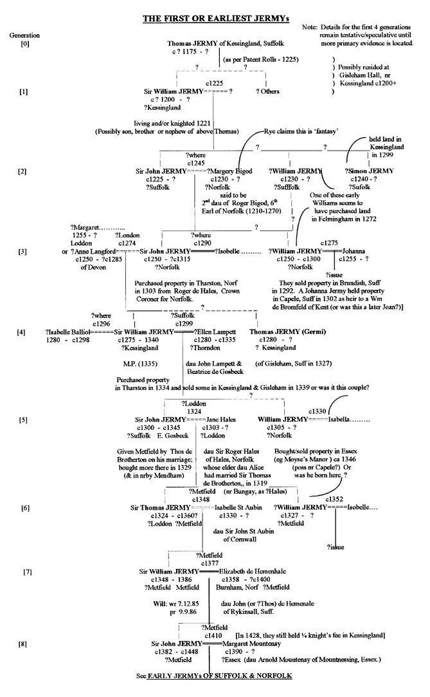

Many of the earliest Norman families in England can be traced back to specific villages in Normandy - as for example the de Veres and the ‘de Varennes' (later Warrens) who, as one of the 200 or so Barons (chief tenants of the King), were granted vast swathes of East Anglia, and elsewhere, after the Conquest. They, who rarely lived on such estates, would in turn ‘transfer' much of this to those a rank or so below themselves who, as sub-tenants, would thus ‘hold' it ‘of the Warrens' or whomever. They too could transfer some of this to other tenants, mainly Norman knights, who would then hold it ‘of them', and so on. For this, they would generally be required to provide some military service. Much of this land was also held initially by another Norman family - the Bigods/Bigots - (pronounced here as ‘Bee-go') many of whom did at least live in Norfolk and Suffolk, as well as elsewhere, some at the rank of Earl. By the later 1100s, with so many landed families' elder sons, many of them knighted, dying young (eg on the Crusades) and through countless first, second and third marriages, the tenure of land at each of these levels of the aristocracy soon became very complex.
Some of the earliest landholders are of course detailed in the Doomsday Book of 1086. There were two other useful Books - the Black Book and the Red Book (Liber Rubeus de Scaccario) - which gives names of many nobles and knights included in returns sent to the Exchequer later in the next century. None of these includes the name Jermy (or recognised variants) per se, although in 1166 the latter book did show one Baron - a Roberti de Bello Campo (ie Robert Beauchamp in Norman French; more recently pronounced ‘Beecham' in English) was served by 7 knights in Somerset including one ‘Robertus Germain' (probably pronounced 'Jer-man' - as in the French manner). Also, the forename Robert is not apparent in the first 10 generations of the recorded family. There were of course no parish church registers to aid our analysis of the earliest members of the family - until 1538 - and very few Wills survive from earlier times. However...
Jermys of the 1200s or before.
Various early records in the PRO, such as ‘Feudal Aids' and ‘Patent Rolls' do contain names - pertaining to land transfers and other legal documents from the late 1100s. The earlier Exchequer records may contain others. The earliest reference noted for the Jermys thus far (by this writer) was that concerning a transfer of land next to the church in Kessingland, Suffolk involving one 'Thomam Jeremye' (this the latin spelling; in English, it would likely translated as Thomas Jermy). The date was 7th July 1225 and those involved were ‘Radulfum de Cassingeland', ‘Simonen de Cassingeland - Vicarium ecclesii' and the said Thomam Jeremye - tenentum di tribus acris in Cassingeland'. This latter man was possibly born around 1175-85, say. Four years later, the Close Rolls dated 13 Hen III (1229) describe a Feet of Fines (No. 110) concerning the same land in Kessingland (then in the Honour of Warren) involving ‘Simon de Pierpoint'. The Pierpoints (from ‘Petra ponte' or ‘Stonebridge') held land in both Sussex and Suffolk of the Earls Warren from the time of the Conquest - including land in the parishes of Kessingland, and neighbouring Benacre, Wrentham, Covehithe and Gisleham. These are on or near the east coast just below Lowestoft.
A farm adjoining Kessingland church today is called ‘Manor Farm' (see next map below). Some of these properties were transferred after Simon's death in 1240 firstly to Hugh de Plaiz and later to Robert de Mohaut - who held two knight's fees there of the Warrens - and later ‘of the Honour of Chester' (held by the Crown). Such nobles, who would not necessarily reside there themselves, would continue to rent some of this out to local knights such as (it appears) the Jermys (eg for knightly service) who, in addition, likely ‘bought' some neighbouring land themselves. Histories of Kessingland describe it as having once been ‘a very important and wealthy village'. From what this derived is not explained. Much of the nearby coast has been eroded over the centuries (for example, Dunwich to the south once boasted 10 churches and has long been lost below the sea). So, while Kessingland has no natural harbour today, possibly it did have some such advantage in the 12th and 13th centuries.
And, with regard to harbours, it may be pointed out that the above Close Rolls include another interesting entry - for the year 1229 - which describes how the King greeted ‘Jeremie' (this the latin spelling) who was ‘Keeper of the Great Ship and Galleys in Portsmouth'. At this date, first names were often all one had (as Simon above) - frequently combined with the name of one's home parish - but some of these were shortly to be accepted as a father's family name - as already established, for example, for Thomas ‘Jeremy'. One might argue that the latter person might well be of some other family than the one we are tracing, but further Kessingland and area transactions certainly consolidate the Jermy identity. Thus Suckling in his book on ‘Suffolk' refers to Vol xxxv of ‘Cole's Mss' (for 1299) which relates that “John Brunflet held lands between those of Roger Wellington, Sir John de Bixley and Simon Germy of Gisleham”. [And in the next century, a Subsidy tax of 15 pence was paid in 1327 for property in Gisleham and Rushmere by one Thomas Germi, while a Suffolk Feet of Fines for 1339 shows the sale of land in Kessingland and Gisleham by William Germye - to Ralph de Megre, Parson of Kessingland. Sir William Jermy - who held Tharston in Norfolk at that time - was in fact shown by Norfolk genealogist Arthur Campling to have died and/or buried in Kessingland - in 1340, this same family's early connections with this coastal Suffolk parish apparently being maintained over the two or three generations of that preceding century.]
The earliest Jermy shown in early Visitation and Harleian pedigrees is an earlier Sir William Jermy - shown as ‘alive (and/or knighted?) in 1221'. On what primary evidence this is based is not stated (but see below regarding one possible relevance of that year). He would appear to be either of the same generation as the above Thomas Jermy of Kessingland, and so born around 1180, say, or possibly a little later. While a knighthood conferred certain advantages, it also entailed onerous responsibilities and these weren't always sought (unless some good property was promised). It was also possible to pay an amount of money (scutage) to avoid having to fight in wars. Any knighted brother (or son?) may not necessarily have been the elder, therefore, although where property inheritance was involved, primogeniture certainly meant the elder son was usually advantaged.
It is intriguing to note that between Kessingland and Gisleham there was once a large moated dwelling where, conceivably, the first Jermys of present concern may well have resided. (Note: an early map shows this to have become ‘Gisleham Hall'.) Until shown otherwise, the site of this early moated Manor House bordering Kessingland and Gisleham may serve a convenient hypothesis as to the earliest suspected Jermy abode. We may reasonably assume there was a knighted Jermy so residing (born ca 1150, say) who served some noble in the time of Henry Plantagenet (d 1189), possibly the Earls Warren or Bigod, and from whom one or more of the foregoing 'earliest' Jermys may well have descended, some knighted, some not. [Note: The site of Gisleham's 'Fortified Manor House' is listed as a Scheduled Ancient Monument and consists today of a double moat with earthenworks, as recorded in DJC King's 'Castellarium Anglicanum'. More recently, planning permission was granted for the construction of a large mansion on part of the site.]
Image produced from the Ordnance Survey Get-a-map service and
reproduced here with kind permission of Ordnance Survey.
There appears to be no clear evidence however as to the parish or manor of residence for the earliest knighted Jermys, as shown in the early published pedigrees, nor even their county. After becoming established in North-east Suffolk, some (knighted members) of the family may well have shifted some miles inland (ie from Kessingland and/or Gisleham) - to settle in or near such Manors as Stockton-with-the Soke or Loddon, say - in south-east Norfolk (and later to Metfield nearby in north Suffolk). I did feel that in any case, they would likely be in the service of some noble family who controlled these or similar areas and that the latters' records, if extant, might one day confirm such early abodes. For a John Bigod, nephew of Roger Bigod (1212-1270), 4th Earl of Norfolk (or 6th, depending on the counting system used), the younger son of his brother Hugh, appears to have settled somewhere within the several parishes of the extensive Stockton Manor, just a few miles from Beccles and Gisleham. His name is associated with the parishes of Geldeston, Beccles and Stockton (of which parish or manor he is shown to have been at his death in 1306) in the pedigrees left at the Society of Genealogists by the respected genealogist Arthur Campling. And he shows that a son of this John Bigod, Sir Ralph Bigod (born ca 1280) also held land in Gisleham, Suffolk itself - in the early 1300s. His line continued in the nearby area of Tofts, Geldeston, Ellingham, Beccles and Stockton for the next century while his younger brother John Bigod would settle in distant Yorkshire from about 1315, as described below.
We do know that the Jermys were later involved with the de Hales family - who appear to have derived from the manor of Hales Hall - this being a part of the Bigods' neighbouring Manor of Loddon (which, in any case, fell partly in the aforementioned Manor of Stockton-with-the Soke also). In the map below, Kessingland and Gisleham are situated about where the letter 's' of 'Beccles' appears, while the neighbouring Stockton and Loddon Manors, including Hales Hall, ran from above present day Loddon virtually to Bungay and Beccles. The Bigods thus held most of the land between the rivers Yare and Waveney in this part of south-east Norfolk, as well as Bungay castle in Suffolk just over the border. Stockton Manor included the parishes of Stockton itself, as well as those of neighbouring Hales, Ellingham, Geldeston and Kirby Cane. It thus comprised about half the Hundred of Clavering. It was later held by the Crown in Elizabeth I's time and probably before. (A 'Soke' constituted an area in which the local Lord of the Manor (ie John Bigod and Ralph Bigod in the late 13th, early 14th centuries in this case) had jurisdiction over local justice and the collection of various fines and fees. The National Archives holds an early Court Roll for this Manor for ca 1285 which I hope one day to examine for any relevant names.)
Image produced from the Ordnance Survey Get-a-map service and
reproduced here with kind permission of Ordnance Survey.
The early pedigrees mentioned above show that the first Sir William Jermy had a knighted son Sir John Jermy whose year of birth has been estimated here at around 1225. This, and the birth year for his father, are based in part upon the date of 1221 typically given for Sir William (living or/or knighted?) and the period when the alleged wife of his son Sir John Jermy is thought to have been born (ie ca 1230), and later lived. The year 1221 was, I believe, notable for an important Council meeting at Oxford between the King and many Barons and Knights and a list of same may have included the name of Sir William Jermy/Germy, but this needs confirmation. His son Sir John Jermy was said in some early pedigrees to have in fact (ca 1245) married the younger daughter of Roger Bigod (1212-1270), 4th Earl of Norfolk (1225-1270) who, amongst many holdings, held (as mentioned) the Manors of Stockton and Loddon during the 13th century thus consolidating the above suggestion as to the possible early abodes of the Jermys. She is sometimes named as Christian, although Campling and others show her as Margery or Margaret. (The Norfolk historian Walter Rye casts doubt on such a marriage). But, as mentioned, there is some prima facia evidence that could at least support such a union (and, with the possibility of early Jermys being established not far from such manors, this interpretation would be helped). It is quite accepted that this Roger Bigod did, as a youth growing up in the Scottish court, marry Isabelle, daughter of ‘William, King of Scotland (1145-1214) - in May 1225 (aged just 13) in Alnwick, Northumberland, although later attempting to divorce her (ca 1245-50). This was apparently because of certain relationships (affinities) in their backgrounds (Roger's mother Maud Marshall had re-married - to William Warren, Earl of Surrey - while Isabelle's grandmother was also a Warren; otherwise I can see no problem). Any elder daughter (?Maud) would likely be born about 1228, say, and Margery or Margaret (a name popular in Scotland at least) around 1230. This could place her own subsequent marriage to ca 1245, as suggested.
It is interesting to note that in that latter year (1245), Roger Bigod, as Earl of Norfolk, travelled to Rome with others to plead certain cases in the Court there involving the king - Henry III. And shortly after, on 3rd April 1248, he was the subject of a Papal Letter (Cal. of Papal Registers 1198-1304) in which “..the Bishop of Ely is mandated to cite Roger Bigod - Earl of Norfolk (and Marshall of England) - and Isabelle, who passes as his wife, to appear within two months in person or by proxy - before the Pope in order that the Cause between them as to affinity, which has already lasted three years, may be proceeded with and determined - Papal Letters on either side having already been obtained and there being no probability of a decision in England.” A later Letter in this Calender (vol 1. p 253) states that “…Roger had repudiated her in 1245, but was compelled by Ecclesiastic sentence to ‘take her back' (possibly in a legalistic not domestic sense?) - in 1253” when the marriage was determined to be legitimate. By 1260 she, at least, lived for some reason in Gloucestershire (where the Bigods held property) although was apparently later buried in the church of the Black (Dominican) Friars, London in 1266 (Harl MS 544 f 68). Her ?estranged husband, the Earl, was himself buried in Thetford, Norfolk just four years later (1270) - at the Priory founded there by his gt-grandfather in 1106, where many of the Bigod family were buried, and some possibly born.
It is conceivable that if Roger felt that strongly about it, he should have desisted from having relations with his young bride in order to avoid issue, which would certainly complicate matters. The usual peerages either show no sons born to them (as noted in a reference to 'The Earls of East Anglia' - Brit Arch Assoc, vol xxi, 1865 - viz: "The Earl married Isabella, daughter of William the Lion, King of Scotland, but left no sons", and other sources as 'leaving no issue' at all. Another reference noted was in a most comprehensive, present day listing (on the Internet) of all families associated in any way with Royal genealogies - edited by one Brian Tompsett. In this, there is a single Jermy reference - ie to a ‘Sir John Jeremy'(sic) - who was apparently married (Tompsett uses the phrase ‘associated with' for all such probable unions) to either a Margaret or Margery Bigod. Sadly, he gives no reference for this item. I also have an account of this period by a now deceased amateur historian (in New Zealand) who was interested in the origin of his family name of Jermy who relates that "..papers relating to this Roger Bigod have variously stated that he died without issue, without heirs male and others without heirs legitimate, and some acknowledge two daughters". But sadly, he too didn't identify such 'papers'.
If there were two such daughters at least born to Roger Bigod around 1230, one wonders what the prolonged divorce application may have meant for the marriage prospects for such girls. Uncertainties regarding their legitimacy could support the idea of a marriage within knighted rather than noble classes - especially between the times of his repudiation and later forced re-acceptance. There was, as mentioned, just enough geographic association between the nobility and knightly families concerned in the present case to allow just such a marriage. Thus Kessingland and area was, we recall, held by the Warrens (married with the Bigods) and later (ca 1265?) by Isabelle of Scotland (nee Warren), who would later marry John de Balliol, King of Scotland (ca 1275), while the Jermys appear to have held property there of the Warrens by knight's fees, both before and after 1250. And, with John Bigod, born ca 1245 (son of Hugh Bigod, the Justiciar) apparently settled somewhere in the extensive Stockton Manor nearby (his sons John, Roger and Ralph Bigod in turn are shown in early pedigrees as born there ca 1280-90s) and his uncle Roger Bigod, the Earl, holding neighbouring Loddon as well, the Jermys could well have held property nearby for services provided to such nobles, including a later Baron - one John, 2nd Lord Segrave, as described below. The above mentioned amateur historian mentioned that the two daughters, Maud and Margery, were 'seemingly' left in the care of Roger's brother Hugh (1215-1265) and his wife Joan (presumably during the 1230/40s) who may thus have been instrumental in any such subsequent marriage of the younger girl - conceivably to a knight living near Stockton, where their son John Bigod later lived and was possibly born. This would again imply that such daughters may well have existed, albeit 'hidded way' as it were - in such as Hales or Stockton. There seems to be no further record of the elder daughter Maud (the name of Roger's mother).
Whomever the first Sir John Jermy married, presumably somewhere in south Norfolk or north Suffolk, he appears to have had a son of this same name around 1250. While Stockton or Loddon (and area) may, as mentioned, have been a possible early residence, we shall have to keep this in check until more confirming data are found. Loddon was originally divided into 5 Manors - by name: Loddon Hall, Hales Hall, Bacons, Kirby Hall and Loddon Ingloss (once the seat of the ancient family of Berney). Such names often evolved from earlier forms when the chief Manor was so divided. White's 'Norfolk' notes that "the chief Manor there was (in 1297) granted by Roger Bigod, 5th Earl of Norfolk, to John, 2nd Lord Segrave (1256-1325), on condition that John should provide Roger with 6 knights for the term of John's life - both in times of peace as war". Lord Segrave was also granted a charter to hold a market and fair there. Three of Loddon's original manors are recalled on a contemporary map which still shows: Loddon Hall, Hales Hall and Loddon Ingloss - all south of Loddon itself and thus not far above Bungay (shown both above and on a later map below). At John Segrave's Inq PM in 1325, reference was made to land he had held in the Manor of Loddon Hall (as granted him by Roger Bigod), as well as 2 acres of land held of Sir John Hales, Knt (probably a son of Sir Roger de Hales; the Hales family had, according to Blomefield, held parts of Loddon manor (as eg Hales Hall) - presumably 'of the Bigods' - from the time of Henry II). There was also a Ranulf de Hales (with a son Roger) who held land in the 1340s near that of the Jermys in Mendham and Sturston, etc. He was probably another son of Sir Roger de Hales, named after his possible father, an earlier Ranulf, son of an even earlier Roger de Hales Snr.
Interestingly, the younger son of Hugh, John Bigod, who later became Patron of Thetford, Norfolk, was warned by the Pope in 1301 to desist from interfering in the appointment of the Prior there. The Bigods were often a law unto themselves in East Anglia and a succession of Kings and Popes had difficulty with them. Thus Earl Roger Bigod above (4th Earl) was one of the Barons who, with his brother Hugh, forced Henry III to reduce certain taxes in 1258. And an earlier Hugh Bigod, also Earl of Norfolk, had led a rebellion against Henry II in 1173 while a little later, another Earl Roger Bigod was one of the Barons who presented Magna Carta to King John in 1215. At his Inq PM in 1305, John Bigod was shown to have held lands in Stockton and Seething, Norfolk, the gift of his brother Roger Bigod, 5th Earl of Norfolk, described as part of the lands he (Roger) had given to the King - who then let Roger and any heirs of his body continue 'to hold them'. John Bigod also held other lands 'of Sir Roger de Hales' (1274-1313) - for whom no Inq PM appears to have survived. John's wife Isobel had an Inq PM, dated 12 Sept 1310, where she is described as widow of John Bigod 'of Stockton'. She also held land at Settrington in Yorkshire (as alluded to above) - "...being 2 parts (out of 3) of the Manor there held earlier by Rauf Bigod 'of the King' by knight's service, with the reversion of the 3rd part, for life, by the gift of Roger Bigod (sometime Earl of Norfolk and Marshall of England) - which Manor ought to remain with John Bigod, son of John Bigod of Stockton and Isabel his wife by the gift of the said Earl." The latter Roger Bigod was John's uncle, not his elder brother (also Roger) who had succeeded that uncle as the (last) Earl - dying in 1307. His brother John, not being 'an heir of his body', did not inherit the vast Bigod estates (as per an agreement with the King). He did obtained permanent 'assignment' of such as Settrington earlier through his uncle Rauf Bigod (born ca 1224), a younger brother of Roger, the 4th Earl and Hugh Bigod. His son John must have died young as Settrington was later in the hands of his brother - a later Sir Roger Bigod (ca 1300-1362) from whom the later Bigods in Yorkshire descended for some genrations. There was an Inq PM for John's son Ralph Bigod (ca 1285-ca 1318) who held manors and/or farms in Norfolk (Marham and Tofts) and Essex (Dunmow) that were left to his son Walter Bigod.
The Inq PM for the last (5th) Earl, Roger Bigod, was held in 1307 and refers to the large Manor of Strigoil in Goucestershire and Monmouth with its Castle, the Abbey at Tintern and a Priory there all established by earlier Bigods. Various lands in Ireland and many counties in England, as well as in Norfolk and Suffolk, are also mentioned - including Easton Gosbeck, Coddenham, Shelton, Forncett, Roughton and Melton - all held 'of Roger Bigod' by knights' fees - by such knights as Richard de Gosbeck, John de Shelton, John Germy (note: no 'de') and the above-mentioned Roger de Hales, respectively. (An earlier Roger de Hales (the latter's grandfather possibly) had held land in Kirkley and Hales - 'of the Fitzwalters' ca 1250 - who in turn likely held same 'of the Bigods' or 'of the king'.) Roger Bigod's first wife was Alice (nee Bassett, widow of Hugh Despencer) whose own Inq PM (after she had re-married a third time - to....de Henaud) mentions Ash and Debenham in Suffolk - which were of the large Manor of Framlington Castle - as assigned to her by her first husband Roger Bigod, Earl, as a part of her dower on his death. He had re-built the Castle at Bungay (ca 1290s) which his forebear Hugh Bigod had built a century or more before and may have resided there for a time. In about 1304, Roger (still without children) named King Edward I as the heir to his vast East Anglian estates which, however, should be returned to him if he later did have any heirs of his body by his present or any future wife. In return, he was to receive £1000 immediately and then this amount annually for life (presumably from his former estates which he still 'held' through this arrangement). He would have no such heirs however - only his brother John Bigod, as mentioned (and with whom he was apparently not on the best of terms) - who thereby failed to inherit the vast Bigod estates as held by his family for almost 250 years! As his brother's heir in other respects, John may have inherited something of his considerable income or savings and such would likely help his son, Sir Roger Bigod, Knight of Lethingham and his son in turn, Sir John Bigod, become established on a lesser scale on smaller estates at Stockton, and later at Settrington, etc. Another brother Sir Simon Bigod married into the Felbrigge family in north Norfolk.
Image produced from the Ordnance Survey
Get-a-map service and
reproduced here with kind permission of Ordnance Survey.
It thus appears reasonable to assume that the Jermys held their property initially by virtue of providing services to some local Lord such as the Warrens or Bigods, (ca 1250-1300). If this was at one of the several manors near Loddon, the immediate control of same would soon be transferred to John, 2nd Lord Segrave when, in 1297, he was granted that Manor by Roger Bigod (1242-1306), the 5th Earl - for his lifetime. For this, that manor was required to continue to provide the same number of knights to Roger as provided him before. One of these may well have been the 1st Sir John Jermy. This Roger had become 5th Earl on the death of his uncle, the 4th Earl, in 1270 and the arrangement would likely continue up to 1306 at least (on Roger's death) - when the lands of the Earls Bigod reverted to the Crown under the prior agreement with the king mentioned above - thus denying his brother John Bigod (of Stockton) and his heirs the Bigods' long held Manors throughout East Anglia and elsewhere. These were soon conferred upon the King's 5th son (the 1st by his 2nd wife Margaret of France) - Thomas de Brotherton (Plantagenet) - in 1312 by his brother, now King Edward II. Thomas, then only 12, and his successors, would then have ultimate control of the Bigods' former Earldom of Norfolk and Suffolk, including the manors in Stockton and area, although the large Loddon manor nearby was now held by John, Lord Segrave until his own death in 1325 and then by the latter's heirs or their guardian. Any Jermys there would thus now owe allegiance to him (and his successors) but possibly to Thomas de Brotherton elsewhere as well. While one line of the Bigods remained for a time in or near Stockton and Beccles, another settled (as indicated above), at distant Settrington in East Yorkshire (held by an earlier Bigod) - where the male line continued upto and beyond the Civil War, I believe. (An early Bigod daughter of this line married into the Chauncy family from whom descended the second President of Harvard University.) True to their form, a later Bigod in Yorkshire rebelled against Henry VIII when he sought to take over local Priories, etc near Settrington (ca 1537) - still referred to in that area as as the 'Pilgimage of Grace'.]
But, to return to the times of an earlier Henry - in the 13th century: A report of a Norfolk Feet of Fines for Hilary term 56th Hen III (1272) shows that a ‘William de Geremie' purchased 40 acres and a messuage in Felmingham from Robert de Wyvill & Agnes his wife (who retained their lordship of same by virtue of William's symbolic annual rent of ‘one rose'). However, the original document - much later abstracted by respected Norfolk antiquarian Walter Rye - actually shows the name clearly written as ‘William Geremie' - that is, without the ‘de' (ie William Jermy today). He abstracted hundreds of such documents the vast majority of which did involve men with place names - so including the ‘de'. His error in one of the few exceptions is thus not too unexpected. For some reason, the Jermys possessed a surname not based upon a place (eg called Germy or some such - although they did later have at least two manor's they gave their name to: ie Germie's or (sometimes) Germyn's manor in Capele, Suffolk (today Capel St Mary) and Jermy's or Tharston Jermy's manor in Tharston and Forncett, Norfolk). The name was thus more likely to derive from the forename Jeremie, although admittedly, names such as ‘fils or fitz Jeremie', say, might have been expected during some intervening ealier period - in the 1100s, say. Such may have been the case, but there is much less documentation from that period for any such confirmation. As Sir William Jermy would likely have died by about 1250 (not many lived beyond 50 at that time), it seems reasonable to conclude that he was not the apparently unknighted William Geremie who purchased the Felmingham land in 1272. The latter may, however, have been a younger son of such a knight,born about 1230, say, who did so - when aged a relevant 40 or so.
That this later William Geremie was a member of the single Jermy family of present concern is again supported by the fact that a later Thomas Jermy (c1450-1503) was himself settled in Felmingham (a relatively small village and parish), some generations later. Significantly, this was in fact the first place in north Norfolk in which the Jermys were known to settle (by the late 1400s) - after their several generations in Suffolk and the south). The family had thus again retained property interests in the interim it seems. The William Geremie of 1272 may not have resided at Felmingham himself, of course - which is rather remote from the family's early centres. Thus, no other Jermy events are recorded in that area for several generations. Interestingly, Felmingham was held in the 1200s by the Wyvills (Whitewells) - 'of Roger Bigod' - who, we have noted, had connections with Kessingland (and of course with many other parishes).
[What validity attaches to an entry in Harleian Society's ‘Knights of Edward I' regarding one ‘Sir Reginald de Jermeny, Knt' is uncertain. It describes an instruction from Edward I for this man to journey to Holland to arrange a marriage treaty between John C…. of that country and Edward's daughter Elizabeth Plantagenet - dated 14 Sept 1296 - Sir Reginald's safe conduct from that embassy to be ensured on his return - 12 Nov 1296'. In this case, Sir Reginald, whomever he was, may well have been raised in/nr Germany, say (and so could speak the Dutch required, if not latin) and hence his appellation - ‘de Jermeny'. There was no place in England of this or similar name; just a Germoe in Cornwall.] There have been no Reginalds in the Jermy pedigrees.
It is thus possible that the Jermys were settled at both their Kessingland/Gisleham and Capele properties during the early to mid- 13th century, before some of them possibly settled at or near Stockton, Hales or Loddon (ca 1250-90s), as mentioned above, and Tharston, etc (ca 1300) in mid-Norfolk, and later back in north Suffolk - at Metfield (from 1325) - thanks to Thomas de Brotherton. The eastern parts of Suffolk and Norfolk - whether at Kessingland/Gisleham and/or Stockton/Loddon, and later at Metfield nearby or, more southerly, at Capele (and then Brightwell, Gosbeck and Stutton - all near Ipswich; see map above) - was clearly the early territory of the Jermys in England, for whatever reasons. Interestingly, Thomas de Brotherton, a later in-law of the Jermys, would as mentioned have held, amongst others, manors of or near Loddon and of Metfield (and probably Stockton) before 1320. The eastern portions of East Anglia was undoubtedly a major area of interest and influence for Thomas as well. This arose when (as mentioned above) the King gave him the former Bigod lands, with the Earldom of Norfolk (including Suffolk), in 1312. The Jermys may well have been in his employ latterly and before that with comparable Norfolk and Suffolk nobility - particularly the Bigods and Warrens (who were inter-married), and later with the Segraves and Mowbrays.
As mentioned earlier, the pedigrees (eg Harleian 1552) show this first Sir John Jermy and wife (of whatever name) to have had a son - also Sir John Jermy - estimated here to be born around mid-century - ca 1250 - possibly to Sir John and his Bigod wife Margery. This is fairly consistent with his subsequent purchase (from Sir Roger de Hales) in 1303 of property in Tharston, Wacton and Forncett in the hundred of Depwade, Norfolk (about 10 miles south of Norwich and some way west of the Bungay/Loddon areas). Forncett was later the head manor of the Liberty of the Duke of Norfolk (which comprised an amazing 127 parishes granted by William the Conqueror to an earlier Duke). All of Depwade would be granted by Edward III to John de Clavering in 1327, although the then Duke of Norfolk would presumably still retain his manorial rights and duties therein, just as the previous Earls of Norfolk had done. [Interestingly, Clavering Hundred is just beyond Loddon Hundred and included Hales and Stockton, etc. Possibly John de Clavering took over direct control here as well - after certain of the Bigods left for Yorkshire and John Segrave's death in 1325 ? However, the Mowbrays would also shortly inherit much in this area.]
There seems to be some differences of opinion regarding not only who was the first or later wives (if any) of this second Sir John Jermy but of his apparent son in turn - the 2nd Sir William Jermy. We have suggested that it was this latter father, the younger Sir John, who married firstly Anne Langford, the daughter of a Henry Langford of Devon and secondly an Isabelle, and that it was his son - Sir William Jermy (c1275-1340) - who may have married Ellen/Elana Lampett, possibly after an earlier marriage to an ?Isabelle Balliol (andlater to a ?Johanna). But more evidence is certainly needed to establish both the names and relevant generations of some of the spouses of this and nearby generations of the Jermys with any confidence. In 1292, a William Germy or Germyn and wife Johanna sold land in Brundish, Suffolk (south of Metfield) to Alex de Fastolf. Was this Sir John's brother (as suggested above) just before his widow Johanna held land at Capele? And, as mentioned, a Simon Jermy, very probably a member of this same family, held land in Gisleham, near Kessingland about then also. The Jermys seems to have been financially viable around this time and more property was soon to come their way (eg at Easton Gosbeck) - seemingly through the 2nd Sir William's marriage - Ellen's mother being Beatrice de Gosbeck. (One might wonder if any of the later Jermy(n)s settled in Devon were younger sons or grandsons of this Sir John and Anne Langford ? Their marriage was likely arranged in London - where many knights and gentry from quite disparate counties often met to negotiate such matters - with inevitable property and/or financial considerations (dowries and joyntures) being paramount. However, the family in Devon was more typically shown as Jermyn later and appears to have had no later descendents beyond the 1400s, in any case.)
Jermys of the 1300s.
In his Jermy pedigree, Campling shows the only son of Sir John Jermy and wife Margery as a John Germye who, with second wife Isabelle, purchased 120 acres and 3 messuages "in Therston, Wackton and Forncett from (Sir) Roger de Hales" - in 1303. By 1316, only Isabelle's name (as 'Germeyn') is shown in Feudal Aids in respect of Tharston et al. John may have died about 1315, therefore. Valdar, quoting the later roller pedigree on vellum, shows John's son, Sir William Jermy, as having married Ellen, and Campling, Elena Balliol. What primary evidence there is in this regard is uncertain. We may observe that if his second wife was indeed an Ellen (Lampett), any prior one, as the daughter of Isabelle Balliol (nee Warren) say, might be seen not unreasonably to have been not yet another Ellen but, conceivably, an Isabelle Balliol. However, Brian Tompsett, at least, shows no such daughter Isabelle but, equally, no Ellen/Elena either - born to her and John Balliol - only two others named Margaret and Anne. And, in regard to the latter of these two girls, points out that 'there is some doubt she ever existed'. Such uncertainty about the names or even existence of the issue of such unions allows us to suggest that a daughter named Isabelle can at least be considered - as much as any other. Interestingly, however, the mother Isabelle Warren had a sister named Eleanor; might she have been commemorated in a shortened form - as Ellen or Elena? Again, the role of this 'Queen' Isabelle - as holder of Kessingland in the late 13th century (amongst much else) - allows of the possibility that any contact thereby, direct or indirect, might explain an otherwise unexpected union of a Bigod daughter with a Suffolk knight - especially as the next generation manifests further associations with royalty - through Thomas de Brotherton, son of Edward I and his 2nd wife Margaret of France.
The younger Sir John's son - Sir William Jermy - was likely born around 1275. His assumed marriage firstly to ?Isabelle Balliol ca 1295 and then to Ellen Lampett ca 1300, say, would thus occur around the time his father and possible aunt Johanna were about to purchase the properties described. He and Ellen then purchased more land at Tharston in 1329 and 1334/5 - about the time he became an M.P. (constituency unknown). Finally, we note that Campling shows this Sir William Jermy to have died and/or been buried at Kessingland in 1340 and thus the conclusions reached above regarding the probable identity of the earlier Germys/Jermys there being of the same one family being thereby further supported. From what date, if ever, the Jermys actually resided at Tharston (vs Stockton, Loddon or Metfield, say) is uncertain. A Thomas Germi, quite possibly a brother of Sir William (or a son of Simon?), paid taxes for lands in Gisleham and Rushmere in 1327. [Note: a Thomas Germyn and a William Germeyn did likewise in nearby Lt Yarmouth (today Gorleston) and Blundeston; but their identities and origins are less certain. One of these sought landing rights (during the later 1200s, I believe) for Lt. Yarmouth but lost his case (in London) due to pressure from the burghers of Gt Yarmouth.] William Jermye, Chevalier, and wife Isabelle also sold land in Kessingland and Gisleham in 1339. This may have been the present Sir William (d 1340) although, awkwardly, a couple with these same names apparently purchased other property a decade later (see below) - long after Sir William's presumed death; was he a cousin therefore? As mentioned also, some of Kessingland was at that time still held by Queen Isabelle, and by the English King's own family as well (after the Warrens), as part of their Honour of Chester.
It was originally thought that the Jermys and de Hales would thus have known each other initially by virtue of the Jermys presence in that south-east part of Suffolk (eg Capele) - that is, quite near Roger de Hales' apparent residence in Harwich - but it appears that Roger (and his ancestors) were actually 'of Hales', immediately south-east of Loddon, in Norfolk, and after marrying (1298) a lady - seemingly of Harwich (?Alice Skogan)- where she may have borne their first two children (including daughter Alice in about 1302) - they ?returned to his home manor near Loddon (almost certainly Hales Hall - originally a part of Loddon manor) where their daughter Jane (also shown as Joan, I believe) and 3 others were seemingly born - after 1302. Further support for the early Loddon area domicile of the Jermy family is thus provided by the fact that Sir Roger de Hales (and his father in turn) would thus be of the same district as the Jermys - with both families serving the same Lords during the 13th and 14th centuries (Roger de Hales became Crown Coroner under Edward II). White's 'Norfolk' shows that the 1000 acres of Hales parish "...was (originally) in the Manors of Hales Hall and Loddon Hall (as well as within the 'Soke' of Stockton), and was anciently a seat of the de Hales family". [There was later a landed family named Hales in Kent, who may or may not have descended from those of Norfolk.]
Image produced from the Ordnance Survey
Get-a-map service and
reproduced here with kind permission of
Ordnance Survey.
In his role as Crown Coroner (ie ‘overseer' of the Royal lands and investigator of the property consequences of unexplained deaths) for Norfolk, Sir Roger de Hales (1274-1313) acquired further property himself, including a quarter of a knight's fee in these three parishes (albeit ‘held' until 1306 'of Roger Bigod'). He ‘sold' part of this in 1303 to the present (younger) Sir John Jermy. This Norfolk property was later referred to as ‘Tharston Jermy's' or ‘Jermy's' manor. ‘Feudal Aids' show ‘Johannes Germy (?already) holding a 1/4 knight's fee in neighbouring Forncett of Roger Bigod, 5th Earl and another 1/4 fee directly of the King in 1302 (unless this was part of his purchase from Roger de Hales the following year? Regnal years are easily confused). It was at about this same time (and possibly earlier) that a ‘Johanna (Joan) Germye' held property - again a quarter knight's fee - in Capele St Mary (as an heir of one William de Bromfeld of Sussex or Kent - possibly through her mother's family?) which was also later described as ‘Jermy's' or ‘Jermyn's manor' The Manor House and nearby 'Jermyn's Farm' still appear on current maps - see below - while the remains of an unnamed ‘Castle' is at Lt Wenham close by.
Image produced from the Ordnance Survey
Get-a-map service and
reproduced here with kind permission of
Ordnance Survey.
Sir William Jermy is shown in most pedigrees as father to the next Sir John Jermy (c1300-c1345) who, in about 1324/5, married Jane the younger daughter of Sir Roger de Hales - often described, possibly in error, as 'of Harwich' (vs 'Norwich') - who had sold his tenancy of the Tharston estate to the Jermys in 1303). His elder daughter Alice had already married Sir Thomas de Brotherton (ca 1321 - see below) who soon transferred his manor at Metfield and Mendham to his new brother-in-law Sir John Jermy ca 1325 - two thirds to Sir John Jermy and one third to his wife Jane, as her dowry. This would be one of many manors Thomas acquired when his brother Edward II gave him most of the former Bigod estates in East Anglia (in 1312) - when making him Earl of Norfolk with Suffolk (when only 12) - as promised him by their father Edward I (and to which his son Edward was also bound) just before his death in 1307. This 'gift' was necessary to meet in part Edward's obligations under his marriage agreement to give his sons by Margaret property with a value of 10,000 marks (about £6,666) each per annum; the Bigods estates were worth £4000 and the rest was due to be raised elsewhere. In 1315, Thomas was created Marshall of England and in 1319, knighted by the King - at York. It may just be a coincidence that it was the same year (1325) as John Segrave died and the Jermys' possible knightly service for him at Loddon (and any resultant tenure there?) ended, that they acquired Metfield through the auspices of the man (and relation) who had inherited ultimate control of this area, and other of the Bigods' holdings, shortly before. [The later Hugh Bigod's elder son Roger had succeeded his uncle Roger as Earl - in 1270 - and on his death in 1306, the Earldom reverted to the Crown, as formerly agreed (and soon after to Thomas de Brotherton), and so, as touched on above, the Bigods' long control of East Anglia finally ceased. Thomas was, as stated, much associated with Suffolk - having had a church built at Trimley, south-east Suffolk (near Brightwell) showing his Arms and was said to have married (ca 1321) in Norfolk - very near Bungay - (where his Arms are also on the church tower). This was just a few miles north of Metfield.]
I thought previously that they may have married in neighbouring Mettingham, where John de Norwich was shortly to receive permission to turn his Manor house into a Castle and to establish a College. However, the medieval term 'fast by...' may not have meant quite the same as the similar phrase 'hard by..' and thus it may well have been the case that the marriage with Alice de Hales (ca 1304-1338) - in about 1321 - took place at nearby Hales or Loddon Hall, say, for this appears to have long been the seat of the de Hales family (a manor within the larger Manor of Loddon held by the Bigods and after 1297 by John, 2nd Lord Segrave). This also makes better sense when one realises that in any case the marriage was said to have taken place in 'Norfolke' (in which county Hales and Loddon of course fall), albeit that Bungay itself was just across the Waveney in Suffolk (as was Mettingham). The parish of Kirby Cane which was partly in Stockton manor and partly in a Loddon Manor called Kirby Hall also extends to very near Bungay. In any case, the fact that a Prince of the realm who could have married almost any Lord's daughter and thereby add considerably to his property and wealth, did not do so but instead married a younger daughter of a Norfolk knight (albeit one who was a Coroner) was for the times most atypical. Interestingly, Alice's father, Sir Roger de Hales, had died some years before (1313) and his still under-aged son John de Hales would have become a ward of Thomas who now held other lands they'd previously held 'of the Bigods'. This, and several other details concerning these families, derives from a very thorough paper on Thomas de Brotherton and family written by Brad Verity (see his article 'Love Matches & Contracted Misery - Part 1' in 'Foundations: The Journal of the Foundations of Medieval Genealogy'). In this, the case is made that such a marriage, seemingly based on love alone, and from a young age, typified the disregard for his financial future that Thomas de Brotherton displayed in many spheres of his relatively short life. In any case, this made Thomas the brother-in-law of similarly aged Sir John Jermy (ca 1300-1345) who had married Alices's older sister Joan or Jane de Hales around the same time. Shortly after (in 1325), Thomas transferred the manor of Metfield, Suffolk to his new in-laws. On John Jermy's death, Jane was apparently re-married - to a John Lovel Jnr.
Thus, the Jermys then resided with more certainty at Metfield Hall, a moated manor house situated about a mile or so south of the village of Metfield (south of Bungay), from about 1325. Sir John Jermy paid a Subsidy tax there in 1327 (as John Germie), and acquired more land in the area over the next generation or so - eg at Weybread, Fressingfield, Linstead and Mendham. (In 1360 a quarter knight's fee was held there by the then widowed 'Lady (Isabella) Germy' - of Sir John de Vere, Earl of Oxford to whom contemporary Jermys may have owed service, or rent in lieu.)
The elder sons of the Jermy family likely lived at Metfield through most of the 14th century, although they seem to have rented it out from time to time later. Stewart Valdar (see his excellent book on the family: A Brief History of the Jermy Family of Norfolk and Suffolk) notes that a Subsidy tax was also paid about then by a 'John Jermy' for property at Gately, Norfolk - he possibly not settled there, however. Sir John and wife Jane (as Johanna) also held the manor and advowson of Easton Gosbek by 1333 (as per Suffolk Feet of Fines) where they may also have resided at times. [By 1413, this was referred to as 'Germeyne's manor' when held by a later Sir John Jermy and wife Margaret (nee Mountenay); it was eventually sold in 1612 by Sir Thomas Jermy (of Teversham, Cambs) (the year after his father Francis' death) and seems also to have done likewise about then in respect of Brightwell - another southern holding - and other of the family's Suffolk Manors acquired by his ancestors; see later. He was apparently in debt to London money-lenders and needed funds badly.]
Significantly, the latter Sir John still held a 1/4 knight's fee in Kessingland (described as land "which Simon Germayn once held") as late as 1428. As mentioned, a William Jermye and wife Isabelle had sold other property in Kessingland and Gisleham in 1339 (to the local Vicar) and not long before this, William apparently died; however, a little later (ca 1352-56), a couple of these same names purchased both Pycott's and Moyse's manors in or near Ardleigh, Essex - situated in several parishes described as being near 'Germie's manor in Capele' (as per Suffolk and Essex Feet of Fines). See map above. Was this William (then a 'chevalier' (Sir)) a cousin or even younger brother of Sir John? It would almost make more sense if it was William, as Sir John's son, who married Isabelle St Aubin (rather than it being the Sir Thomas Jermy typically shown in this position). Isabelle seems to have been a popular name at the time. There had also been a purchase of further property at Tharston, etc in 1335 by William Germye, Chevalier, and wife Elena (probably Ellen Lampett) (according to 'Norfolk Deeds 329').
The following scanned pedigree (hopefully not too 'muzzy') seeks to set out an approximate conception of the first 8 (or ?9) generations of the family. (There may well be need to adjust certain names, dates and places; thus more primary evidence is required in regard to any early settlement of the Jermys in such as Stockton, Loddon or south Norfolk). [Note: There would seem to be two numbering systems for the Earls of Norfolk; eg the 4th Earl (d 1270) is sometimes shown as the 6th - where the first 2 have been counted.]

Sir John Jermy (of generation 5 above) - granted 'free warren by Edward III for all his desmesne lands in Easton Gosbeck, Coddenham, Mendham, Metfield, and Linsted Magna' (c1343) - appears to have died, possibly at Easton Gosbeck, around 1345, leaving a young son - shown typically as Sir Thomas Jermy, born about 1325-30 (as estimated). These dates too must remain approximate until more conclusive evidence arises. Sir John's widow Jane may have re-married Sir John Lovel. By 1346, the Jermy manor in Tharston, Forncett and Wacton was held by William 'Germeyne' (ie Germy) of the then Earl, Thomas Mowbray (1/4 fee) and 'of the King' (1/4 fee). This (again) points to Sir John Jermy and Jane Hales having had a son William Jermy (ie named appropriately after Sir John's father) rather than (?just) Thomas (a name not previously apparent in the family). In any case, a marriage seems to have been arranged for the latter man (whrther as Thomas or William) with someone from a rather distant county - Cornwall. He is apparently shown as being 'of Metfield' and later as holding land in Easton Gosbeck and in neighbouring Coddenham (Charter Rolls 1343) - when he'd be rather young; but also as 'living 1359' (Campling) - all presumably as 'Thomas', although I'd like to confirm this further. [Or did this Thomas die in 1359?] Other sources seem to show that it was still a Sir John Jermy who held Gosbeck and Coddenham at that time. After the death of Thomas de Brotherton in 1338, Suffolk soon acquired its own Earl (or Duke?) - Robert d'Ufford, followed by his son William d'Ufford - to each of whom in turn allegiance would have been due from all local (Suffolk) knights. Any surviving d'Ufford archives may thus throw more light on just who was/were the elder Jermy(s) in the 1340s to 60s. No known Jermy Wills appear to have survived from this period.
The next elder son - of generation 7 - was another Sir William Jermy (c1350-1386) - who did leave a Will, the first Jermy known to do so. This was, I believe, written on December 7, 1385 (possibly at Walton (near Trimley and Felixstow), Suffolk - the location then and earlier of an important Castle) and proved the following September. If his estimated year of birth is about right, he would be only 36 when he died. He had received several 'orders' from the King during the 1370s and '80s, along with other Suffolk knights, to defend the Suffolk coast against the French and/or to accompany certain Barons to help settle disputes on the Scottish borders. He married Elizabeth de Hemenhale of ?Rysingall, Suffolk (today Risangles, near Eye) probably around 1370-75. Her family derived originally from Hemenhale (later Hempnall) in Norfolk but were later settled in a number of localities in both Norfolk (eg near Burnham) and Suffolk. In his Will - entitled (in latin) 'Testamen din William Germy, Militis, defunct...' he directs his body to be buried in the church of St John the Baptist at Metfield, Suffolk, to which he left 100 shillings - 'ad factur campanile de Medefeild...' (ie towards building a bell tower there), and then half his chattels to his wife Elizabeth and 20 shillings each to Margaret de Hemenhale, John Gray and to the churches at Gosbeck and Mendham. He left smaller amounts to various clerics - at Framlingham (with its even grander Castle), Felixstowe and Rysingall (and/or 'Rysinges') and 'all my Bonds' and residue of my chattels to William Boothe (who held Coddenham next to Gosbeck) - possibly 'on trust'. There appeared to be some reference to commanders of platoons of 20 soldiers - one of which he may himself have led. Executors were his wife Elizabeth, Sir John Breuse (Brews), Katherine de Hemenhale, John Derecloe and Roger Breuse. It was proved at Norwich on 9 Sept 1386 (I believe). It seems accepted that he died in (very late) 1385 although mid-1386, say, is also possible. Church memorials seem to indicate 1385. (Note: this Will was wrongly indexed at Norwich Record Office and therefore 'missing' for many decades of the mid to late 20th century, until I chanced to locate it in about 1990.) It seems odd that there is no reference therein to his apparent son John, although property inheritance was often arranged earlier and separately.
Jermys of the 1400s.
This latter William's son, another Sir John Jermy, was likely born about 1375-80 and would thus be still a boy when his father died. He later married Margaret Mountenay, daughter of Sir Arnold Mountenay of Mountnessing, Essex (ie originally 'Mountenay's Ing') around 1410 (as estimated) and became a working knight like his father - having served with the future Duke of Norfolk at Agincourt in 1415. Margaret seems to have brought with her certain properties (2 full knight's fees) in Norfolk (between the rivers Yare and Bure) but they probably resided mainly at Metfield and/or Withersdale Manors. They had at least one son - John - born around 1415-20. I have seen reference to sons Thomas and William Jermy in this generation as well, but have no confirming details. There was apparently a Sir William Jermy (with a wife Elizabeth) as a Justice of the Common Pleas (King's Bench) about this time (buried 23 Dec 1463 or '83 in Theberton, Suffolk, according to 'Weever's Monuments') who could fit the latter man, but this needs confirmation. (He may have been of the 'Jenny' family of course - sometime confused with the Jermys, if not of the Jermyns of Rushbrooke.)
In 1428, an Inquisition P M at Acle (either for Sir John himself or for his Mountenay in-law; this to be clarified) showed that he held, besides Kessingland, lands (3/4 knight's fee) in Sprowston, Catton, Beeston, Wroxham, Little Plumstead, Blofield, Freethorpe and Hassingham, all in Norfolk, through his wife (who seems to have inherited same from her brother Sir William Mountenay, who also fought at Agincourt and died without issue), as well as his own property in Suffolk. However, he and his wife had either sold or borrowed against some of their property at 'Germeyne's Manor' at Easton Gosbeck in 1413. There seems to be no Will for Sir John and his date of death is estimated at about 1460. Patent Rolls for 1452 make reference to Sir John Jermy and other knights receiving 20 shillings each from the Manor of Hintlesham, Suffolk, as well as instructions about appointing people to keep watch on the coast 'for the King's enemies'. He is also listed as one of several 'Commissioners of the Peace', along with Sir John Hopton, Sir Thomas Brews, Sir William Yelverton, Sir Gilbert Debenham, plus several Dukes. In 1481, the latter Sir Gilbert Debenham is shown at his death as holding various Manors including Coddenham, Gosbeck, Vaux and Germyns - as held previously by Sir John de Vere, late Earl of Oxford, who had committed High Treason. The Jermys must have held these Manors under this Earl and later of Sir Gilbert (to whom they would pay modest rents). 'Germyns' (sometimes as 'Germy's') is described as being in Little Wenham (with its Castle), which is very near Capele, and could well be that shown as 'Jermyn's Farm' today (see map above).
Sir John's elder son John Jermy, Esq may have grown up at Metfield or Withersdale in the 1420s. He married as his first wife Elizabeth Wroth, daughter of one William Wroth of Enfield, Middx, Esq around 1435-40. This would be yet another marriage negotiated in distant London - Elizabeth possibly an heiress bringing property or funds in return for certain assurances for herself and issue - eg if her husband died young. They had two sons - Sir John Jermy and Thomas Jermy, Esq (as later styled) - and four daughters: Elizabeth, Margaret, Ella and Jane - possibly all born in Metfield. This would appear to be the first generation when some detail becomes available regarding births, subsequent marriages and deaths of the siblings of the eldest sons - eg through Wills and other documents - although parish registers were still a century away. This meant that more data becomes available about subsequent potential branches and sub-branches of the family. Prior to this time, such younger member of the family and any branches were as likely to exist but they - and any progeny - were effectively invisible - especially if inheriting little or no property. If any such branches continued (and many younger, non-inheriting siblings became impoverished and/or died young), it may have relevance to our earlier remark about the apparent paucity of the landed Jermy family after 1700. Thus, one of the exceptions could relate to a few Jermys extant in Wangford and Blything Hundreds in Suffolk - at least into the 16 and 1700s - that may have derived from any such sub-branch(es) during the 14- and 1500s. (Who, for example, was the William Jermin of Benacre - very near Kessingland - who left a Will in 1516 (SAC) or the Peter Jermy of Heveningham and the William Jermy of Eye listed as 'Able Men of Suffolk' in 1638?) Such areas are just where some such survivors, probably with little or no land or higher educations, but probably some apprenticeship-based skills, might be expected. Or, were these latter really derived from the unlanded Jermyn families of south Norfolk who continued to drift southward, often using the name Jermy, as yeomen and labourers, into north Suffolk? This may be further considered later.
Patent Rolls dated 1461 include references to Sir John's son John Jermy, Esq, along with William and Thomas Brews, Esqs and Gilbert Debenham (the Younger) concerning land in Mendlesham, Suffolk; and another of 1462 when, along with other Suffolk dignitaries, he is part of a Commission to enquire into crimes committed by one John Straunge of Brampton, Suffolk. But then, in 1463, he - again as John Jermy, Esq - is appointed to a Commission with Sir William Yelverton, Richard Brasier, Mayor of Norwich, William Calthorpe, Esq, and William Yelverton, Esq (all men of north Norfolk) to arrest one Robert Wolston and bring him before the King in Chancery. This John Jermy was also on a Commission of Oyer and Terminer in 1472. [Note: in many of these early documents, the name is spelt Germyn.] After his first wife died (ca 1460?), John Jermy appears to have moved to a small estate at Buckenham Ferry, Norfolk - near Norwich and to have done so around 1463 - the foregoing documents indicating his increasing involvement with influential men of Norfolk from about this time and less with those of Suffolk. He already held property nearby (from his parents), but purchased the Buckenham estate separately - from Sir William de Norwich. This would allow his elder son Sir John Jermy, now married, to become established (or continue?) back at Metfield in his own right, and from whom the subsequent Suffolk branches of the family would descend (see pedigree for 'the Early Jermys of Suffolk').
John Jermy, Esq re-married - probably in Norfolk - to a Margaret (surname unknown; possibly a widow) in about 1470 and remained at Buckenham Ferry until his death there in 1487 - although by his Will, requested to be buried back at Metfield. There was at the time a ferry across the river Yare at this point (surrounded by marshes) and the ownership of the manor there may have included rights to collect fares. The village today is called simply Buckenham. This move by John Jermy from Suffolk to Norfolk just after the 'War of the Roses', places him conveniently (at generation 9) between the first 8 generations (referred to here as 'the Earliest (or First of the) Jermys' - mainly of Suffolk, but with some Norfolk holdings) and the subsequent 8 generations -who then descend in parallel in both Suffolk (from elder son Sir John) and Norfolk (from younger son Thomas). The parallel pedigrees of these latter two branches - proceeding from generation 10 - are thus termed here ' the Early Jermys of Suffolk' and the Early Jermys of Norfolk', respectively. With the increase in sibling data mentioned, the associated pedigrees will necessarily alter from the essentially vertical form for those first 8 generations to much more horizontal ones for these later two main branches - in Suffolk and Norfolk. (This may necessitate more reliance on both vertical and horizontal 'continuations'.)
Some of the Will by John Jermy of Buckenham was given by Blomefield I believe; this may be augmented if and when later examined. His widow Margaret re-married - to Thomas Jenney, Esq c1495 and then to Thomas Idele, Gent c1508. An Inquisition Post Mortem for John was held on 4 Nov 1488. It list the names of the men who both he and his father had 'enfeoffed' as trustees to protect their property. These included Sir John Heveningham, William Brews, Esq, Nicholas Parker of Withersdale, Sir William Mounteney and Ralph Hemenhale and others. In this, his elder son and heir is given as (Sir) John Jermy, then aged 40+. Their manor of Metfield was then worth 40 marks and Gosbeck 26 marks - both then held of Elizabeth, Duchess of Norfolk - while Withersdale was worth 10 marks and held of one Elizabeth Harcourt. Buckenham Ferry itself however was not mentioned. The son Sir John married Isobelle (or ?Elizabeth), daughter of John Hopton of Westwood Lodge, Blythburgh,, Suffolk, Esq. Some pedigrees show her to have married firstly a William de Brews of Fressingfield, Suffolk before 1456, although this is contradicted in a book on John Hopton - by Colin Richmond (1981) pointed out to me by Isobelle Charlton - a fellow Jermy searcher in the 1980s . William Brews seems to have married Isobelle Hopton's sister Elizabeth in that latter year (although Sir John's monument apparently says Isobelle was an only daughter?). Isobelle died before her husband and he is shown as marrying secondly - Jane, daughter of Edward Daniel of Acton, Suffolk, but this too may be incorrect - according to Richmond's analysis. See also Will of Edward Daniel's wife (1508).] Sir John Jermy of Metfield died in 1504/5.
His younger brother Thomas Jermy, Esq, not having inheriting Metfield, seems to have preferred settling on an estate in north Norfolk - at Felmingham - rather than on any other Jermy property - as at Tharston, Buckenham Ferry, Sprowston or Easton Gosbeck, say (which in any case, may also have gone to the elder brother - by virtue of primogeniture). Thomas would marry Anne, daughter of Sir William Yelverton of Roughton in north Norfolk, around 1475/6. And while she may have brought some nearby property with her, it seems more likely that Felmingham at least was already a Jermy possession - as discussed earlier. It is possible that Thomas and Anne first resided for a short time at Buckenham Ferry itself, however - for there is a letter in the famous Paston Letters, dated 8 March 1476/7, written by John Paston to his mother Margaret during a short stay at Topcroft, Norfolk, the home of his intended bride Margery Brews, in which he says "...Mother, please it you to weet (know) that the cause (reason) that Dame Elizabeth Brews desireth to meet with you at Norwich, and not at Langley...(is due to me)...for my brother Thomas Jermy...telleth me that the Causey ere ye come to Bokenham Ferry is so overflown that there is no man that may on ethe pass it, though he be right well horsed.". Thomas Jermy was in fact John Paston's brother-in-law's brother-in-law! We will, however, consider firstly the early Suffolk descendants of Sir John Jermy of Metfield, followed by those of this younger brother Thomas in Norfolk. In each case, these are then followed by their respective Later lines in the two counties - until their eventual demises.